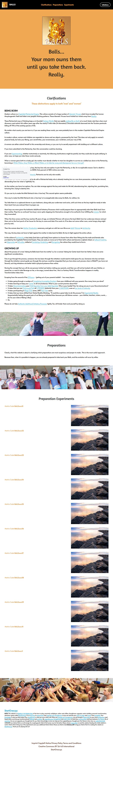

Balls on Strikingly
Modern culture is a Capitalist Patriarchal Empire. This culture consists of a large number of Memetic Viruses which have invaded the human Morphogenetic Field and taken over people's thinking patterns. These Memetic Viruses have twisted our minds away from Reality.
These Patriarchal ways of thinking keep us in Ecocidal Fantasy Worlds that are rapidly ending life on Earth at a much faster rate than when most dinosaurs went extinct 66 million years ago after the nearly 9 mile wide (14 kilometers) Chicxulub asteroid slammed into the Yucutan peninsula killing off 75% of the existing species of life.
No matter what country you are born in, if you are reading these words, you were probably born in this modern Capitalist Patriarchal Empire culture.
In modern culture, women and children are regarded as slaves and sex objects, possessed by the 'men'. This does not only apply to women's physical body, but also your Being, your sensitivities, your awarenesses, your worldview, and your way of life.
A woman can either submit herself to this ownership and slavery, or you can try to secretly experiment with building out a different culture.
If you have submitted to the Patriarchy, then this conversation could be shocking.
If you are Experimenting, whether instinctively or reactively, the following clarifications might be painful, but they could also be quite edifying. In eiher case, we hope you take these words seriously.
When a woman gives birth to a baby girl, the mother must decide whether to train her daughter to survive as a skilled sex slave in the Patriarchy, becoming a White Widow, Grey Widow, or Black Widow, or to hide her away and disempower her as a 'nice girl'.
When a woman gives birth to a baby boy, the boy has only one option: to join the Patriarchy, or die, for no explicable reason. Such a death is called Sudden Infant Death Syndrome (SIDS). Sixty percent of SIDS victims are male.
If the boy lives, he has joined the Patriarchy. Patriarchs are his only role models.
This forces the woman to decide what to do with a Patriarchal baby who is already treating her as a sex slave possession, ordering her around, demanding from her what is 'rightfully' his.
As the mother, you have two options. You can take revenge against the boy and make his life hell, abandonning him, rejecting him, punishing him, torturing him, trying to destroy him.
Or you can try to make the little Patriarch into a 'nice boy'. This second option seems preferable.
One way to make the little Patriarch into a 'nice boy' is to energetically take away his Balls, his volition, his
You hide them in a cupboard drawer in your bedroom, along side your underwear and socks, until such time as the boy might be ready to take them back from you and put them to proper use.
Most boys are never given the Authentic Adulthood Initiatory Processes which would prepare them to appropriately take their Balls back from their mother. They live as confused 'nice boys', never quite stepping into themselves enough to live authentic lives fulfilling the mission for which they incarnated.
When the time comes and the boy reaches 18 years of age, an initiated Woman will remove the boy's Balls from her underwear drawer and put them out on the front porch of her house for the boy to come and take if he wants to. If he does not come rather soon, some hungry dog might pass by and...
Then the woman does her Mother Graduation ceremony, and gets on with her own life as an Adult Woman in Archiarchy.
This way, the boy does not have to fight against his mother to take back his Balls. He has to fight against the entire culture.
In the culture of Archiarchy, a boy baby (and also a girl baby) have options to choose from other than fitting into the male and female roles provided by the Capitalist Patriarchal Empire. They can early on move out of their birth culture and become a 'global citizen', a Cultural Creative, an Edgeworker or Riftwalker (archived — not captured), skilled at Cavitating, Inhabiting, and Navigating the culture they would love to live in.